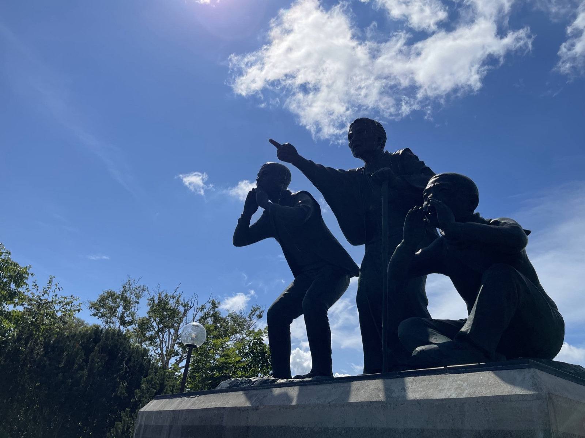
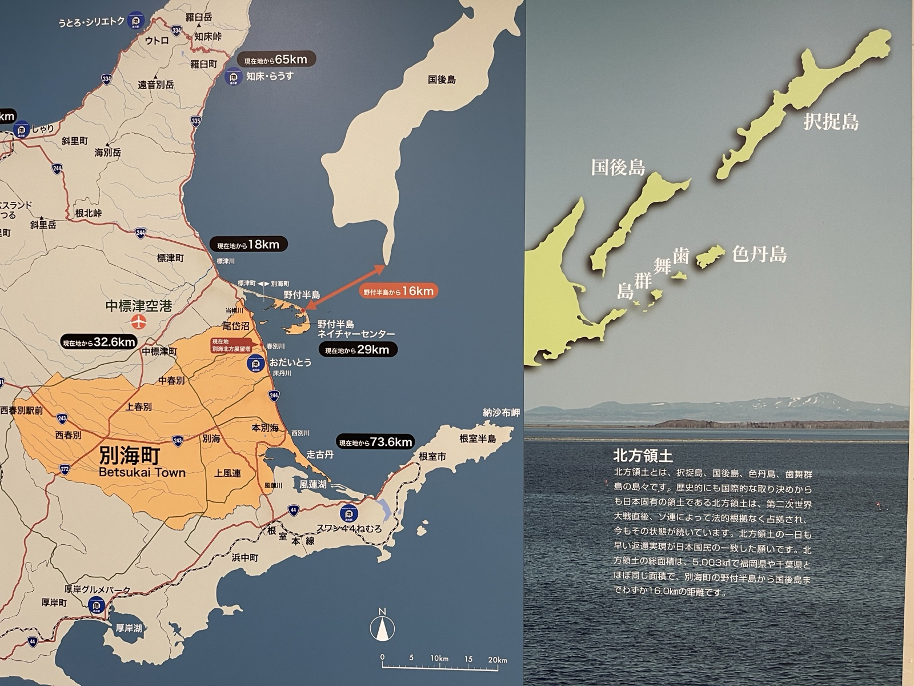
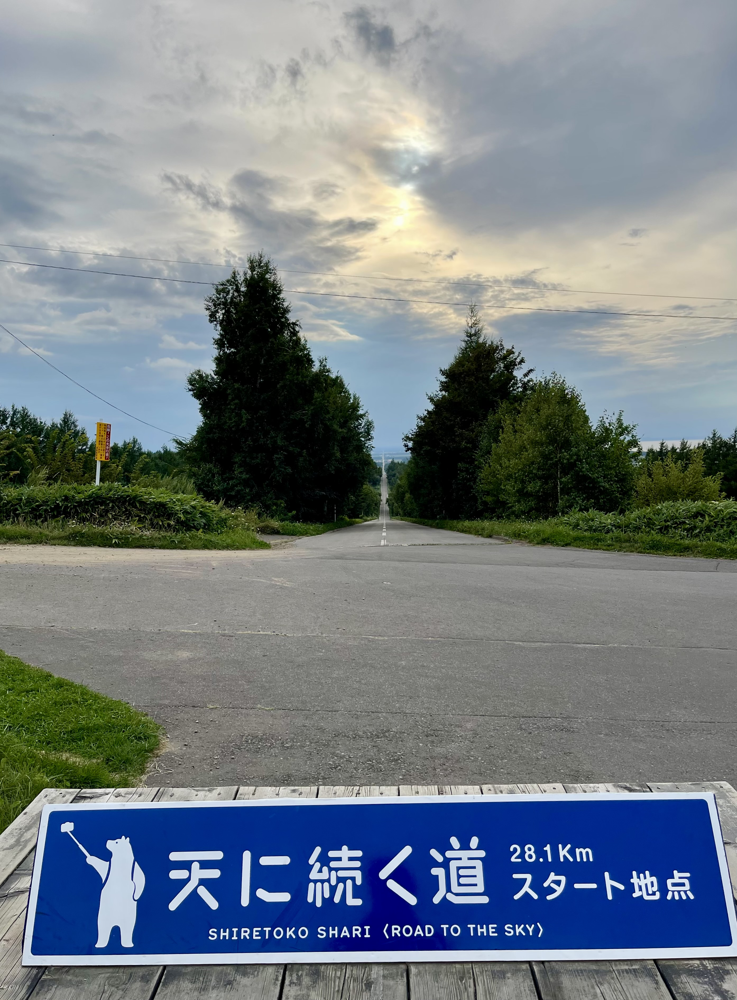
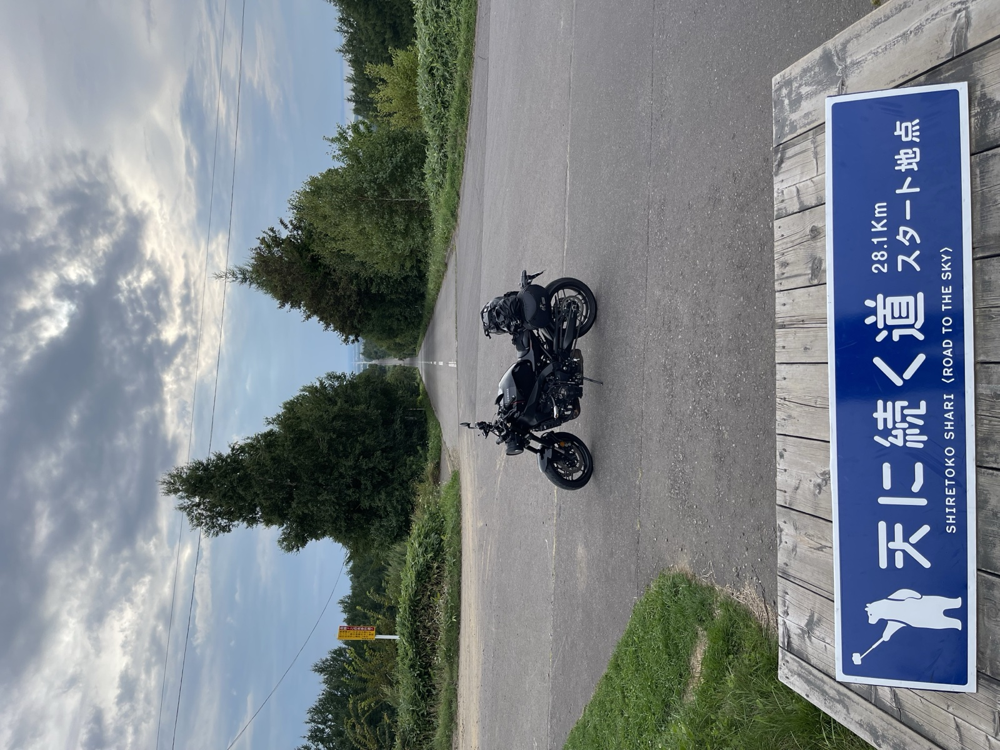

根室の朝、再び納沙布岬方面へ走る。前夕は灯台で海を眺めただけで日が落ちていたので、今朝は岬の近くにある北方領土資料館でじっくり過ごすのが目的だ。
納沙布岬・北方領土資料館 — 返還運動と署名
岬の近くには北方領土に関する資料館がある。北方領土がどのように失われたか、返還運動がどう続いているかを展示している施設だ。島の位置関係が一目でわかる地図が印象的だった。


展望台からは前夕と同じく海と歯舞群島が見える。距離は数キロ、あそこは日本の領土なのに自由に行けない。返還運動の署名を求められ、迷わず署名した。実際に自分の目で島を見て、銅像の前に立つと、この問題が「遠い話」ではないと感じた。
知床国立公園へ
根室を後にして北上し、知床方面へ向かう。途中の施設でヒグマの剥製を見た。本州のツキノワグマとはスケールが違う。この大きさが北海道の山を歩いているのかと思うと、林道を走るときは気をつけないといけない。

知床五湖は期待以上だった。木道から見渡す湖面に知床連山が映り込み、風がなければ完璧な鏡になる。ヒグマの出没情報があると立入制限がかかるエリアもあるが、この日は全コース歩けた。世界自然遺産に登録されているだけのことはある。
天に続く道 — 28kmの直線
知床五湖から斜里へ戻る途中、「天に続く道」のスタート地点に立ち寄る。斜里町から海別岳方面へまっすぐ伸びる約28kmの直線道路で、地平線の先まで道が続いていく景色から名が付いた。日没前の傾いた光に照らされた道は、本当に天へ吸い込まれていくようだった。



今日の宿は小清水町。明日は神の子池と網走へ向かう。
今日立ち寄った場所
1
納沙布岬・北方領土資料館
北海道根室市納沙布 / 日本最東端の岬周辺。北方領土関連の資料館・銅像があり署名活動も。前夕に灯台を訪問済み。
2
知床五湖
北海道斜里郡斜里町岩宇別 / 知床国立公園内。世界自然遺産。高架木道（無料）と地上遊歩道（有料・ガイドツアー）。ヒグマ活動期は立入制限あり。
3
天に続く道（スタート地点）
北海道斜里郡斜里町峰浜 / 斜里町から海別岳方面へ約28km伸びる直線道路の起点。地平線の先まで道が続く景色から「天に続く道」と呼ばれる。